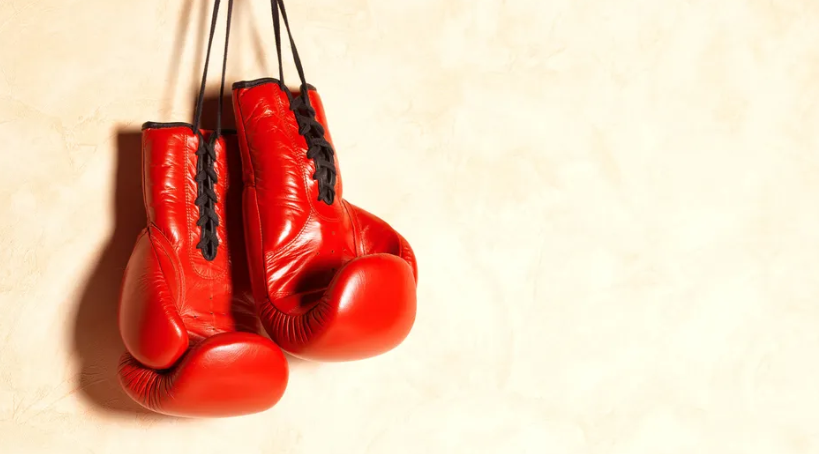

Boxeo

Introducción
El boxeo es un deporte de combate en el que dos participantes se enfrentan
utilizando únicamente sus puños protegidos por guantes. El objetivo es
golpear al oponente dentro de las reglas establecidas para obtener más puntos
o lograr un nocaut. Es uno de los deportes más antiguos y populares del mundo.
Datos importantes
- Se practica en un cuadrilátero llamado ring.
- Los combates se dividen en asaltos o rounds.
- Los boxeadores utilizan guantes, protector bucal y vendajes.
- Existen diferentes categorías según el peso de los competidores.
- Forma parte de los Juegos Olímpicos desde 1904.
Curiosidades
- El boxeador Muhammad Ali es considerado una de las mayores leyendas del deporte.
- La pelea más larga registrada tuvo 110 rounds en 1893.
- El nocaut más rápido ocurrió en pocos segundos después de iniciar el combate.
- El boxeo moderno tiene reglas establecidas desde el siglo XIX.
Más información
Si deseas conocer más sobre la historia y las reglas del boxeo, visita el siguiente enlace:
Ver artículo completo sobre Boxeo